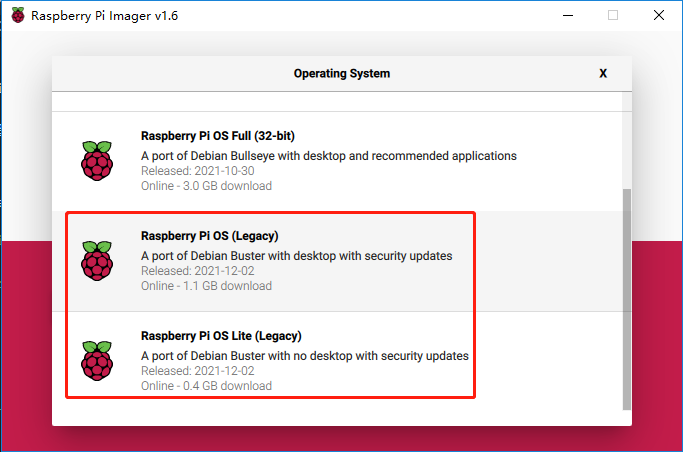

安装操作系统¶
必需组件
任意树莓派 |
1 * 个人计算机 |
1 * 微型 SD 卡 |
第1步
树莓派开发了一个图形 SD 卡写入工具，适用于 Mac OS、Ubuntu 18.04 和 Windows，对于大多数用户来说是最简单的选择，因为它会下载映像并将其自动安装到 SD 卡。
访问下载页面：https://www.raspberrypi.org/software/。 单击与您的操作系统匹配的 Raspberry Pi Imager 链接，下载完成后，单击它以启动安装程序。

第2步
当您启动安装程序时，您的操作系统可能会尝试阻止您运行它。 例如，在 Windows 上，我收到以下消息：
如果出现此消息，请点击 更多信息 ，然后点击 仍然运行 ，然后按照说明安装 Raspberry Pi Imager。

第3步
将 SD 卡插入计算机或笔记本电脑的 SD 卡插槽。
第4步
Warning
Raspberry Pi OS升级到 Debian Bullseye 后，会导致有些功能不能使用，建议还是继续使用 Debian Buster 版本。
在Raspberry Pi Imager中，点击 CHOOSE OS -》 Raspberry Pi OS(other)。

将新打开的页下拉到最后面，你会看到 Raspberry Pi OS(Legacy) 和 Raspberry Pi OS Lite(Legacy)，这2个是对Debian Buster安全更新，它们之间的区别是带不带桌面。 建议安装 Raspberry Pi OS(Legacy)，这个带桌面的系统。
第5步
选择您正在使用的 SD 卡。

第6步
按 Ctrl+Shift+X 或者点击 设置 按钮来打开 高级选项 页面启用SSH和配置wifi，这2项必须设置，其他取决于你的选择。 您可以选择始终使用此图像自定义选项。

然后向下滚动以完成 wifi 配置并单击 SAVE 。
Note
wifi country 选择 CN。

第7步
单击 WRITE 按钮。

第8步
如果您的 SD 卡上当前有任何文件，您可能希望先备份这些文件以防止永久丢失它们。 如果没有要备份的文件，请单击 YES。

第9步
等待一段时间后，会出现如下窗口，代表写入完成。